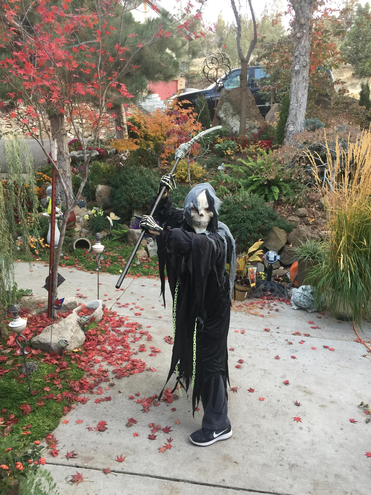

Let the leaves hit the ground and the bodies hit the floor.
Halloween problems

Cold nights cause children to have to take off costumes in order to wear jackets. Which ruins the costume.
Costume shoes aren't very comfortable.
Make up gets ruined as the night goes on.
Trick-or-treating tends to be around dinner time, but it makes kids snacky.
Trick-or-treating is tiring.
Solutions:
Cloaks! Cloaks can be super warm when you get the right ones, plus they go with every costume. If you have wings as a part of the costume, you can safety pin them to the costume.
If you get a pair of cheaper shoes and soul inserts you can decorate the shoes to make them match your costumes.
Waterproof make up works really well, and if you bring a go bag with exrta makeup, q-tips and wipes, the make up easy easy to fix.
Keep snacks in your go bag, walking around for hours can make you hungry. Full kids are less cranky.
If you're walking around, you can bring a wagon. It can hold your kiddo and their goodies.